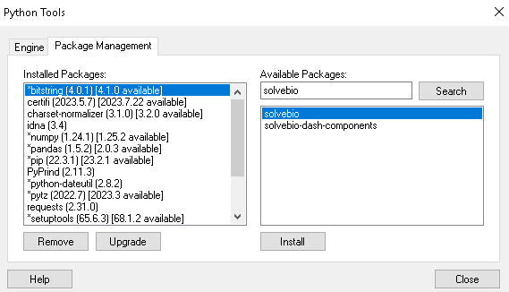
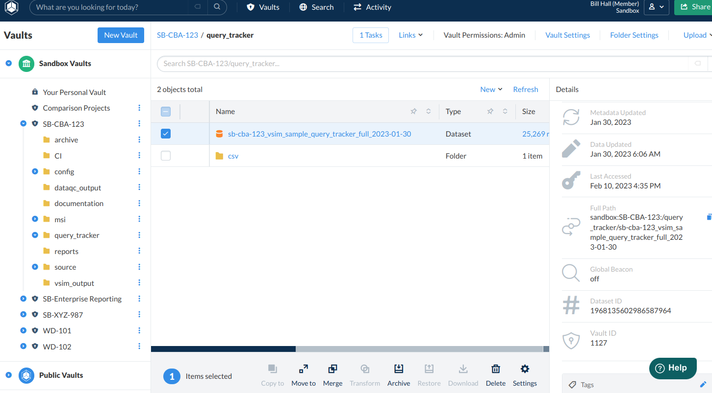

Integrating a Client Hosted Spotfire with your QuartzBio Environments¶
Introduction¶
Utilizing the native API capabilities of the QuartzBio platform, a client-managed Spotfire instance can gain access to both the raw source vendor data that is the input to the QuartzBio Platform as well as the curated / normalized data that is the output of the data management capabilities of the QuartzBio Platform.
This guide will help you set up your secure access to these APIs as well as set up the Spotfire configurations needed to bring the data sources into your Spotfire environment.
Step-By-Step Instructions¶
Step 1: Setup QuartzBio API Credentials¶
Follow the Python API instructions here to generate your personal access token.
Step 2: Add the quartzbio and pandas Python Packages to Spotfire¶
Login as an Admin of your Spotfire instance.
Go to Tools / Python Tools.
Type
quartzbioin the search and then install the package.Type
pandasin the search and then install the package.
{kind=link}

Step 3: Register the Data Function in Spotfire¶
Login as an Admin of your Spotfire instance.
Go to Tools / Register Data Functions and create a function with the following settings:
Name:
QuartzBio EDP Data RetrieverType: Python script
Packages:
quartzbio;pandas;spotfire;jsonDescription: Data retriever function to access data in the QuartzBio platform
Script:
import quartzbio
import pandas as pd
import spotfire
import json
quartzbio.login(access_token=access_token, api_host=api_host)
data_set = quartzbio.Dataset.get_by_full_path(data_path)
field_info = data_set.fields()
returned_data_set = data_set.query()
pd_field_list = {}
sf_field_list = {}
pd_data_type_map = {
"string":"object",
"text":"object",
"auto":"object",
"integer":"int64",
"long":"int64",
"double":"float64",
"float":"float64",
"boolean":"bool",
"date":"datetime64"
}
sf_data_type_map = {
"string":"String",
"text":"String",
"auto":"String",
"integer":"Integer",
"long":"LongInteger",
"double":"Real",
"float":"Real",
"boolean":"Boolean",
"date":"DateTime"
}
for field in field_info:
pd_field_list[field.name]=pd.Series(dtype=pd_data_type_map.get(field.data_type,"object"))
sf_field_list[field.name]=sf_data_type_map.get(field.data_type,"String")
qb_data_set = pd.DataFrame(returned_data_set, columns = pd_field_list)
spotfire.set_spotfire_types(qb_data_set, sf_field_list)
Parameters:
Input Parameters
access_token– String – Requiredapi_host– String – Requireddata_path– String – Required
Output Parameters
qb_data_set– Table
Save the Data Function to a folder with the permissions needed to give access to those in your organization that you would like to be able to use the function to pull in new datasets.
Step 4: Importing a dataset¶
First, gather your inputs:
ACCESS TOKEN: From Step 1 above.
API HOST:
Login to your QuartzBio EDP instance by going to
app.quartz.bioand then choosing Launch next to your EDP instance.Take the part of the URL up to the first forward slash. You will need to add
.apiprior to the.edp.aws.quartz.bio.Example:
URL after login:
https://sandbox.edp.aws.quartz.bioAPI URL:
sandbox.api.edp.aws.quartz.bio
EDP Data Path:
Within the EDP instance, navigate to a vault and find the dataset you would like to import.
Single click the row of the dataset and copy the full path from the Details on the right pane.
Example:
sandbox:SB-CBA-123:/query_tracker/sb-cba-123_vsim_sample_query_tracker_full_2023-01-30
{kind=link}

Then import the dataset:
Open the Spotfire Library to the location that you saved the Data Function.
Double click on the data function to bring up the input parameters screen.
Input the parameters as described above and click OK.
Edit the name of the new data table and click OK.